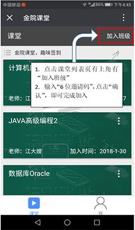
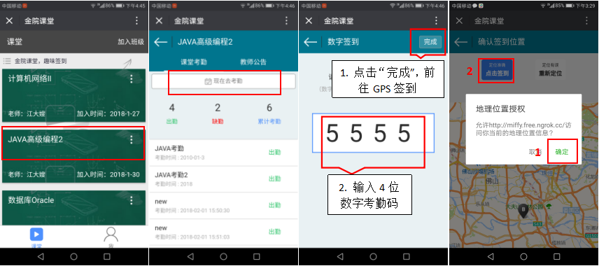
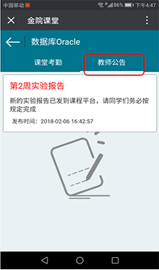

感谢您使用金院课堂！！
金院课堂是旨在改善传统的课堂签到方式提高大学课堂出勤率，同时增加课堂师生的互动性。主要是教师端发起签到功能并提供限时有效的数字号码，学生端上传实时GPS定位信息并输入相应的数字号码进行课堂签到，系统及时地统计和显示出学生出勤情况反馈给教师端，达到现代课堂签到方式的智能性、快速性和有效性。
下面是金院课堂【学生端】部分功能简介！
我是学生 问题一：如何注册账号？ 无论您是老师或者学生，新用户都仅可以使用【邮箱】进行注册，您在填写相关的个人信息之后，即可注册成功。
问题二：如何加入班级？ 当您以学生的身份登录后，在课堂列表页有上角有【加入班级】，输入【6位邀请码】以后，点击【确认】，即可完成加入，已加入的班级将会存在课堂列表里。
 问题三：如何参与课堂考勤？ 老师发布了考勤之后，学生在【课堂列表】首页找到相应的需要考勤课堂，点击进去后，再点击上方的【现在去考勤】，在规定时间内输入【考勤码】以及【上传定位】即可。（注意：记得允许GPS定位）
 问题四：如何查看教师通告？ 老师发布通告后，学生可在相应课堂查看老师发布的通知。  问题五：个人信息等内容？ 如下图所示。